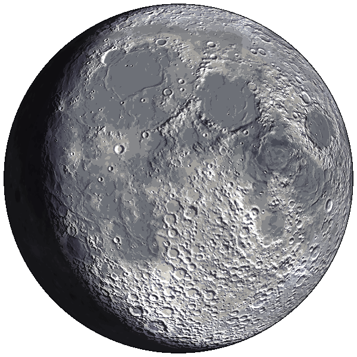

chapas ·
boceto A: con foto
boceto B: solo texto
luz cenicienta (lado de noche):
0,16 · elegida
0,07 · la de antes
0,12
0,22
clica un país a la izquierda; pasa el ratón (o tabula) por sus banderitas en la Luna